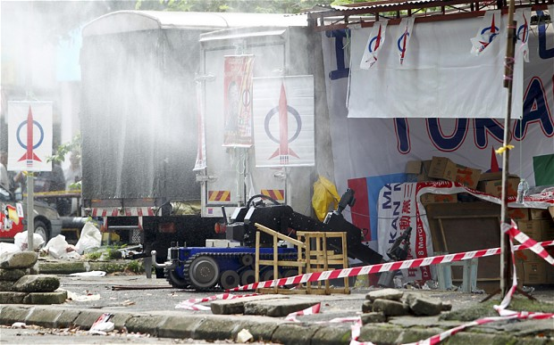

Blindtext
Malaysia election: timeline of politics and protest
Malaysia has had a turbulent history since gaining independence from Britain in 1957. (SEE ORIGINAL)

1957: Country gains independence from Great Britain. The full name for the new state is “The Federation of Malaya” under the leadership of Tunku Abdul Rahman as Prime Minister.
1963: Former colonies of Sabah, Sarawak and Singapore join together with Malaya to form the wider Federation of Malaysia.
1965: Singapore withdraws from the Federation with Malaysia while a communist insurgency breaks out in Sarawak state.
1969: Race riots sparked by resentment toward ethnic Chinese economic success results in the deaths of hundreds. The capital city, Kuala Lumpur is severely affected and encounters some of the worst of violence.
1981: Dr Mahathir Mohamad becomes Prime Minister, presiding over an economy achieving high growth rates of at least eight percent a year.
1990: Sarawak communists sue for peace with Malaysian government.
1993: Malaysia’s Sultans, who function as the country’s Monarchy and Heads of State, surrender their privilege of legal immunity.
1997: Asian financial crisis hits Malaysia hard, ending a period of buoyant economic growth.
1998: Dr Mahathir fires Anwar Ibrahim as his deputy and has him arrested for corruption and sexual misconduct charges including sodomy - a crime in Malaysia.
2000: Mr Anwar is found guilty and sentenced to nine years in a court decision widely seen in Malaysia and the international community as unfair and politically motivated.
2001: Serious racial tensions between Malays and ethnic Indians lead to the worst violence between the groups in years.
2002: Mass out-migration of foreign workers in response to new government legislation which provides for whipping and extended prison terms for minor offences by immigrants.
2003: Abdullah Ahmad Badawi replaces Dr Mahathir as Prime Minister in the first leadership transition in 22 years.
2004: After Prime Miniser Abdullah wins a major landslide election victory, Mr Anwar is released from prison and his sodomy conviction is repealed. Large numbers of Malaysian citizens caught up in the Asian tsunami disaster, government postpones mass deportations of Indonesians illegally residing in the country.
2008: Mr Abdullah’s ruling Barisan Nasional coalition loses its two-thirds majority in Parliament suffering its worst election defeat in years against a resurgent opposition led by Mr Anwar.
2009: Mr Abdullah decides to hand in his resignation as Prime Minister. Establishment favourite, Najib Razak takes over the reigns of power.
2010: Landmark court ruling states that the country’s non-Muslim minorities may use the word “Allah” when referring to God. Mobs go on the rampage attacking churches in response.
2011: Thousands take to the streets of Kuala Lumpur to rally for electoral reform. Police come under criticism for employing heavy-handed tactics including the use of tear gas and water canons to disperse protestors.
2012 (January): High Court exonerates Mr Anwar of the second batch of his sodomy charges.
2012 (June): Iranian national, Masoud Sedaghatzadeh is extradited by a Malaysian court to Thailand for his alleged involvement in a bomb plot targeting Israeli officials.
2013 (March): Malaysian forces attack Filipino separatist militias in Borneo after violence between local groups leaves about 30 people dead.
2013 (April): Mr Najib formally dissolves parliament marking the start of thecountry’s General Election campaign.
2013 (May 5): Malaysians head to the polls in what many analysts see as a landmark election between the incumbent, Najib Razak of Barisan Nasional against veteran opposition leader, Anwar Ibrahim.